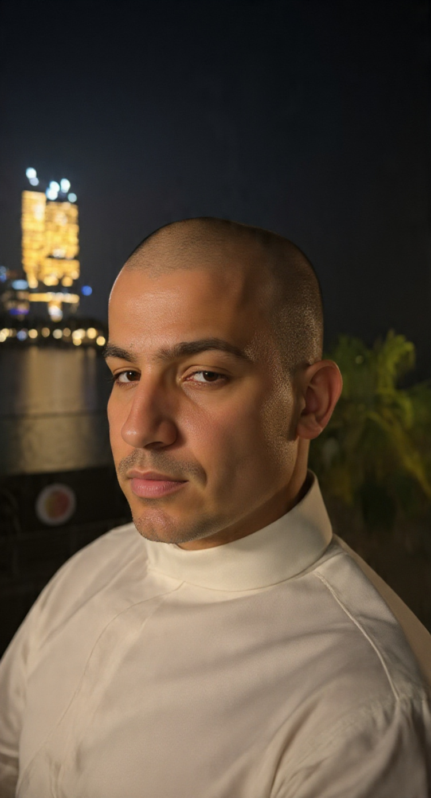
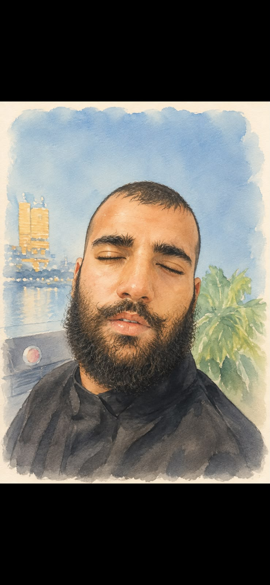

الفائز بذا طويز الموسم العاشر
بقلم الصحفي: سكلمبو خري جنبوا
في كل عام تقوم جمهورية منگوليا تاون بإقامة مسابقة ذا طويز للمواهب. في هذا الموسم، شهدت المسابقة منافسة شرسة بين متسابقين اثنين على المركز الاول. هئولاء المتسابقين هما:
- مونكي بنانا الملقب بـ ((ذا روك سوق الجمعة))
- شوكو بير الملقب بـ ((الايطالي الارهابي))
بالرغم من أن ذا طويز يشارك فيه أكثر من خمسة وتحسين متسابق كل عام، كان المركز الأول محتوما بين هذين المشاركين. أحتارت لجنة التحكيم في تحديد الفائز، هل سيكون مونكي بنانا الذي موهبته هيا القبح الخارق، ام شوكو بير الذي هناك 1000 بنت ما بتتمناه؟ قرر الحكام في النهاية أن يعطون المركز الأول مشاركة بين الإثنين.

